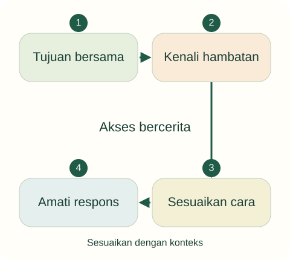
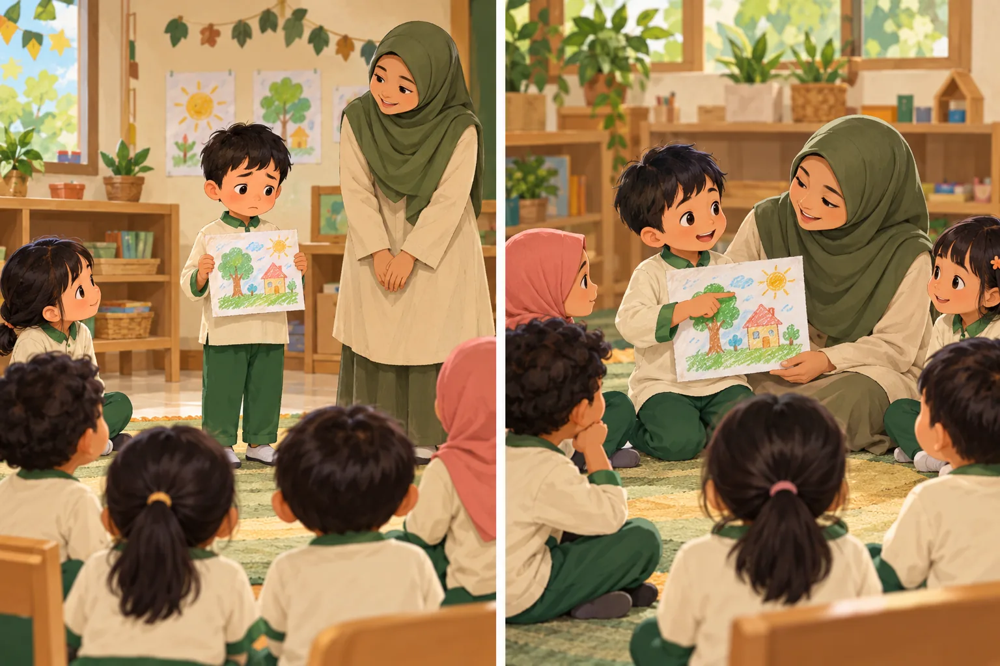

Tujuan pembelajaran
- Menjelaskan relasi pedagogis yang responsif
- Memeriksa hambatan partisipasi
- Merancang penyesuaian tanpa kehilangan tujuan belajar
Relasi pedagogis dalam tindakan
Pertemuan 2 membahas kedudukan anak sebagai subjek. Unit ini menelaah cara guru menjalankan tanggung jawab tersebut melalui interaksi. Relasi pedagogis bersifat asimetris karena guru bertanggung jawab atas lingkungan dan batas keselamatan, sementara anak tetap memiliki suara dan kemungkinan mengambil keputusan. Respons dimulai dari mengamati, memberi waktu, dan memeriksa maksud anak sebelum menambah tuntutan.
Praktik sesuai perkembangan
NAEYC (2020, 2022) menekankan pola perkembangan umum, keunikan anak, dan konteks budaya serta sosial. Guru dapat memakai ketiganya untuk menafsirkan peristiwa yang sama. Dalam satu kegiatan, diam mungkin berkaitan dengan banyaknya orang, bahasa yang digunakan, atau bentuk tugas yang belum familier. Membandingkan respons saat bercerita dalam pasangan dan kelompok besar memberi informasi yang lebih spesifik untuk merancang dukungan.
Akses dan tujuan
Tujuan “mengomunikasikan pengalaman” dapat dicapai melalui ucapan, gambar, isyarat, atau alat komunikasi yang digunakan anak. Jika tujuannya memang menggunakan kosakata lisan, guru dapat mulai dari menunjuk, lalu memberi contoh satu kata dan menunggu respons. Prinsip akomodasi yang layak bagi peserta didik penyandang disabilitas dirujuk melalui PP No. 13 Tahun 2020. Penyesuaian pedagogis sehari-hari tetap dapat dilakukan untuk mengurangi hambatan pada semua anak.
Pengamatan dan penyesuaian
Catat konteks, tindakan guru, dan respons anak. Keterangan “setelah diberi pilihan menunjuk atau berbicara, anak menunjuk gambar pohon dan menyebut ‘besar sekali’” dapat ditindaklanjuti. Guru mungkin mencoba percakapan kelompok kecil atau mengizinkan anak memilih urutan bercerita. Hak untuk didengar memberi dasar normatif bagi praktik tersebut. Bukti partisipasi membantu guru menilai apakah penyesuaian bekerja di kelasnya.
Diagram konsep

Bagaimana anak dapat bercerita ketika cara berpartisipasi di kelas terlalu sempit?

Saat diminta bercerita di depan kelompok, seorang anak memegang gambar dan diam. Guru duduk sejajar, mengajak anak menunjuk bagian gambar, lalu mendengarkan ketika anak menambahkan dua kata.
- Bagaimana posisi guru berubah?
- Cara komunikasi apa yang tersedia untuk anak pada adegan kedua?
Pembahasan kasus
Menunjuk membuka akses untuk memulai cerita, lalu ucapan dua kata memberi bukti tambahan. Pertahankan tujuan berkomunikasi, coba pengaturan berpasangan, dan bandingkan apa yang dapat disampaikan anak.
Buka contoh penalaran setelah mencoba
Usulkan satu cara lain agar anak dapat menceritakan peristiwa.
Dalam pasangan, anak dapat memilih dua gambar berurutan dan menunjukkan apa yang terjadi terlebih dahulu.
Latihan terbimbing
Bedakan catatan peristiwa, dugaan, dan perubahan yang dicoba. Gunakan contoh anak diam ketika diminta menjelaskan gambar di depan kelompok.
Latihan mandiri
Rancang dua cara menunjukkan pemahaman pada tugas bercerita. Tulis satu tujuan bersama dan satu bukti bagi setiap cara.
Lihat pembahasan
anak menyusun dua gambar berurutan dan menunjuk bagian yang ingin ia ceritakan
Pilihan gambar berurutan dan respons menunjuk tetap memberi kesempatan mengomunikasikan peristiwa.
Refleksi calon pendidik
Saat ikut berbicara sulit bagi anak, pilihan apa yang dapat saya tawarkan tanpa mengambil alih ceritanya?
Catatan hanya disimpan di peramban ini. Tidak dikirim kepada dosen.
Referensi dan bacaan pendamping
- National Association for the Education of Young Children. (2020). Developmentally appropriate practice: A position statement.Kerangka profesi berbasis riset, bukan regulasi Indonesia. Pertimbangkan pola perkembangan, individualitas, dan konteks. Ringkasan konsep tidak menggantikan dokumen asli.
- National Association for the Education of Young Children. (2022). Developmentally appropriate practice in early childhood programs serving children from birth through age 8 (4th ed.).Buku utama pendamping. Cakupan sampai usia 8 tahun berbeda dari definisi yuridis PAUD Indonesia; tidak direproduksi di portal.
- United Nations. (1989). Convention on the Rights of the Child.Pasal 12 tentang kesempatan menyampaikan pandangan dan perhatian sesuai usia serta kematangan.
- Republik Indonesia. (2020). Peraturan Pemerintah Nomor 13 Tahun 2020 tentang Akomodasi yang Layak untuk Peserta Didik Penyandang Disabilitas.Dasar akomodasi pendidikan; penerapannya memerlukan informasi kebutuhan individual.